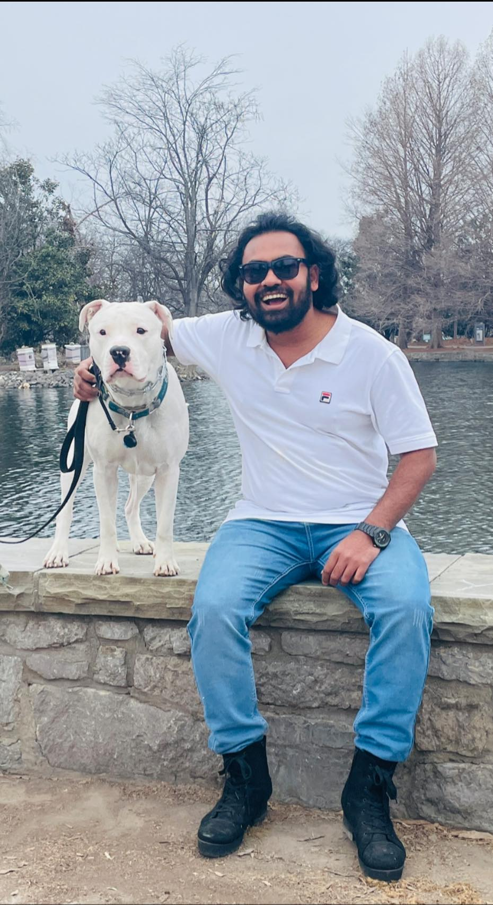

Prospective PhD Applicant | AI/ML/DL/RL/LLM | 5G/6G Wireless & Computer Network Communication | Autonomous & Cyber-Physical Systems | Power Systems & Smart Grid | IoT | Agentic AI Frameworks
Email: rislam1@my.tnstate.edu | Contact: +1 (615) 554 9183
I am Md Robiul Islam, a Graduate Research Assistant under Dr. Sagnika Ghosh, Associate Professor in the Department of Electrical and Computer Engineering at Tennessee State University (TSU), Nashville, TN. I am currently completing my MS in Computer and Information Systems Engineering. I presented my MS thesis in Spring 2026, completed all coursework, and will submit my thesis book in Summer 2026.
I am actively seeking a PhD position where I can contribute to cutting-edge research at the intersection of artificial intelligence and real-world intelligent systems. My research interests cover the interdisciplinary application of machine learning (ML), deep learning (DL), reinforcement learning (RL), large language models (LLMs), and multi-agent systems (MARL) in autonomous systems, cyber-physical systems, IoT and 5G/6G wireless networks, network communications, power systems, smart grid, and agentic AI frameworks.
My technical foundation is built on hands-on expertise in deep reinforcement learning algorithm design and comparison, including PPO, DDPG, SAC, DQN, TD3, and MARL. I also work with classical and ensemble machine learning methods such as Random Forest, SVM, XGBoost, Decision Trees, K-means, DBSCAN, and PCA. My deep learning experience includes ANN, CNN, RNN, GAN, LSTM, U-Net, Autoencoders, transformer-based models, attention-based frameworks, BERT, GPT, T5, and LangChain.
My LLM integration experience extends to production-level deployment through hands-on MCP server development, connecting LLMs with enterprise systems via OAuth 2.0, RBAC, and TLS/SSL in real-time REST/WebSocket environments. I am proficient in Python, PyTorch, TensorFlow, Keras, MATLAB/Simulink, Stable-Baselines3, OpenAI Gym, and cloud platforms including AWS, GCP, and Azure. These experiences give me the practical programming depth, systems-level thinking, and end-to-end AI pipeline experience to contribute meaningfully to both theoretical and applied PhD research.
Worked with deep reinforcement learning algorithms such as PPO, DDPG, SAC, DQN, TD3, and MARL to analyze intelligent decision-making under uncertainty. The project focus includes algorithm comparison, policy optimization, and performance evaluation in simulated environments.
Tools: Python, PyTorch, Stable-Baselines3, OpenAI Gym, MATLAB/Simulink
Applied classical machine learning, deep learning, and hybrid AI methods to real-world intelligent system problems. The work includes supervised and unsupervised learning, model evaluation, feature engineering, time-series analysis, and multimodal prediction.
Tools: Python, TensorFlow, Keras, Scikit-learn, XGBoost, Random Forest, SVM
Developed hands-on experience in connecting large language models with enterprise systems through MCP server development, secure authentication, authorization, and real-time REST/WebSocket-based communication.
Tools: LLMs, LangChain, REST API, WebSocket, OAuth 2.0, RBAC, TLS/SSL
Explored AI-driven approaches for intelligent networks, IoT-enabled systems, autonomous systems, cyber-physical systems, and smart grid applications. The focus includes intelligent control, prediction, optimization, and data-driven system performance improvement.
Areas: AI/ML, 5G/6G, IoT, CPS, Smart Grid, Network Communication
Journal Articles
Peer-Reviewed Conference Papers
You can download my academic CV below.
Download CVEmail: rislam1@my.tnstate.edu
Contact Number: +1 (615) 554 9183